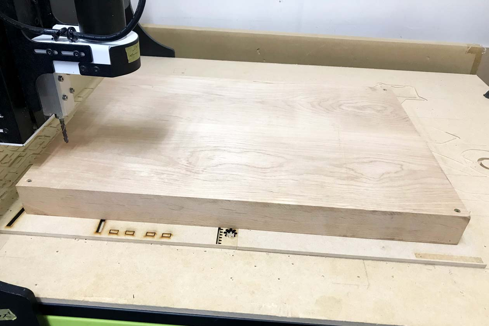
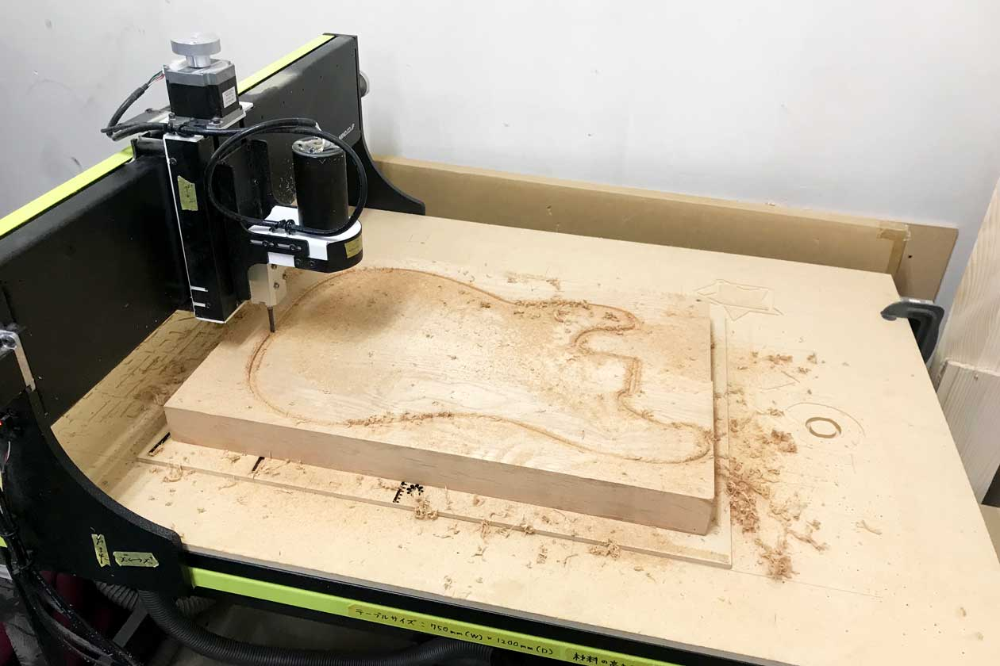
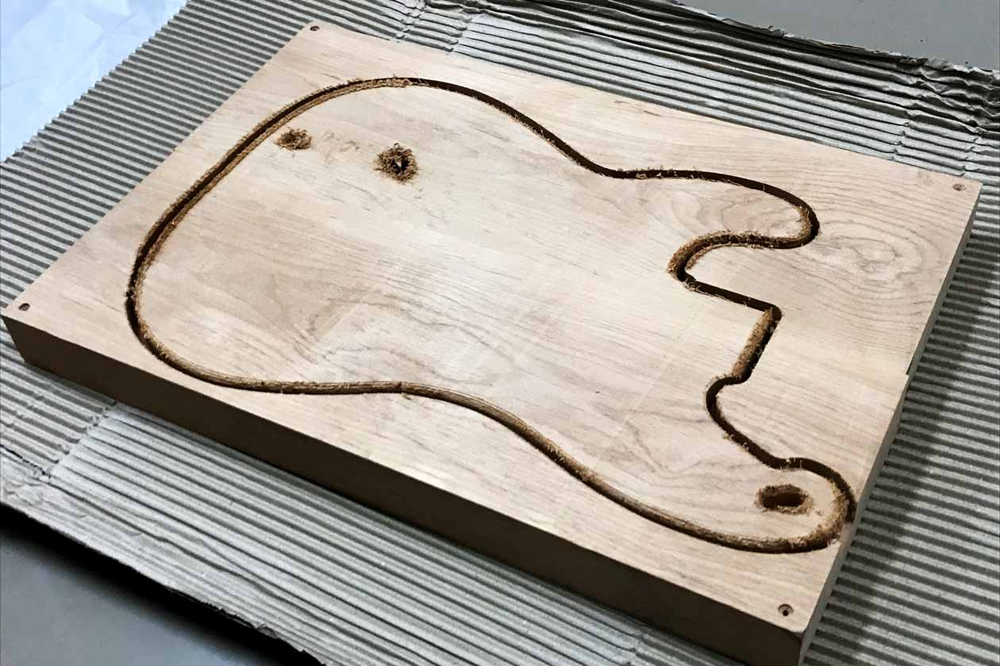
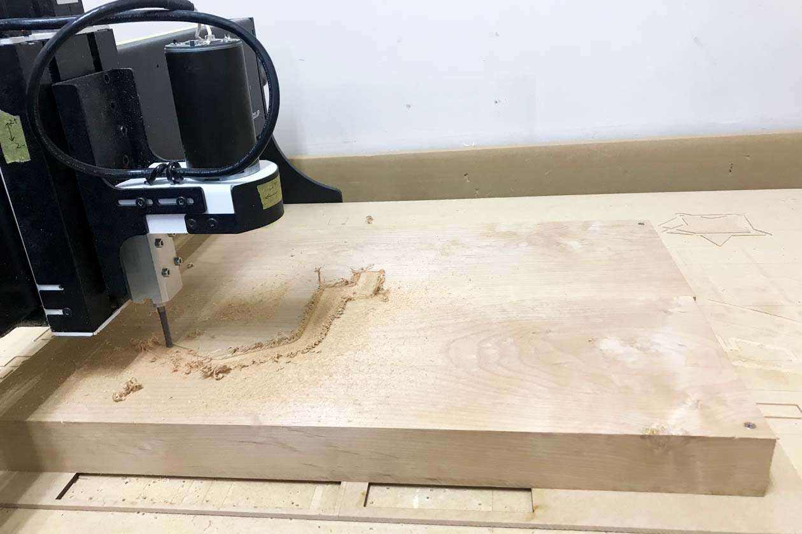
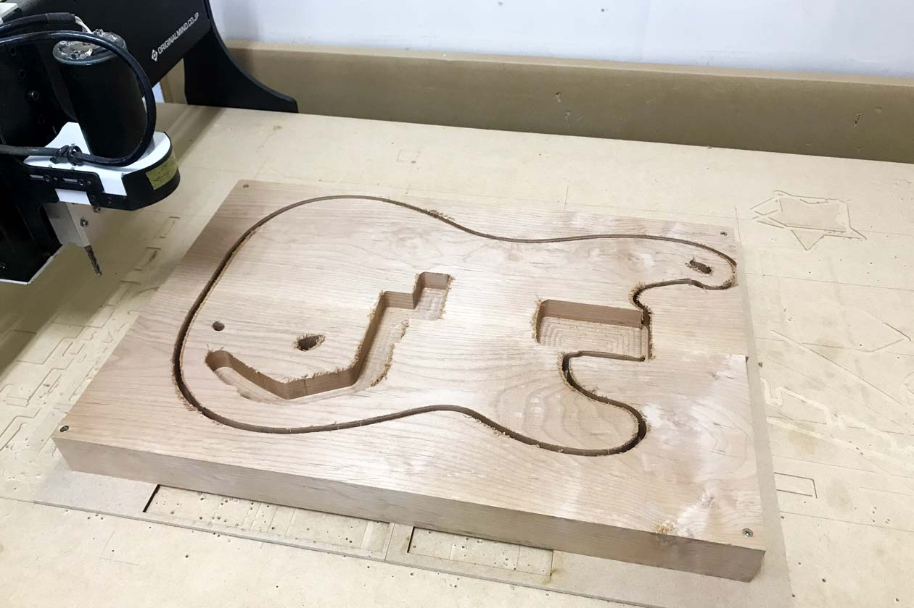
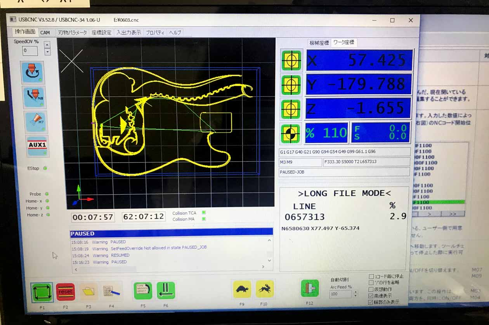
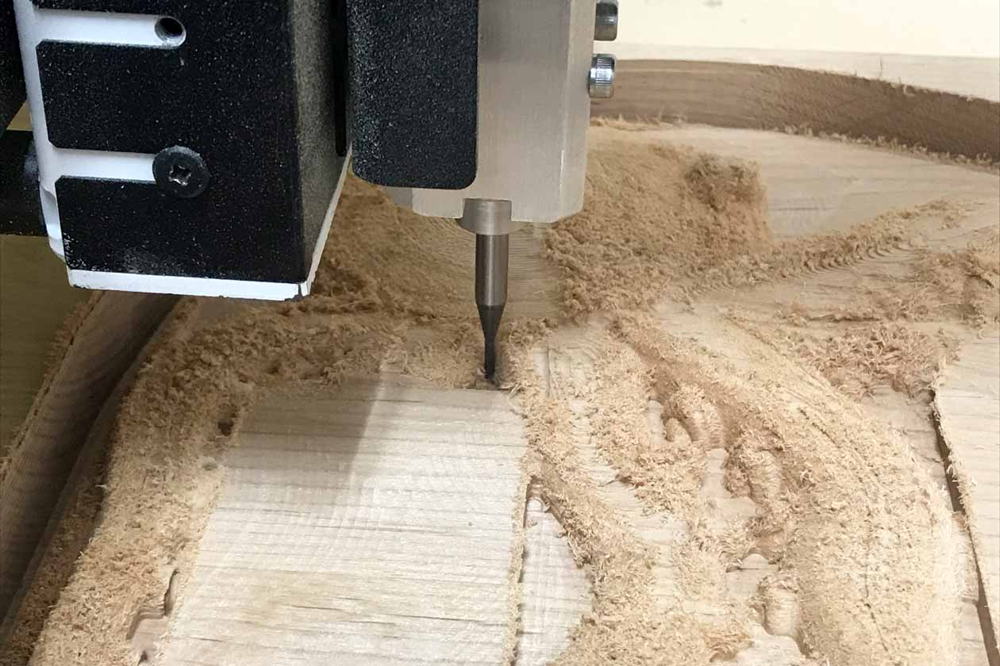
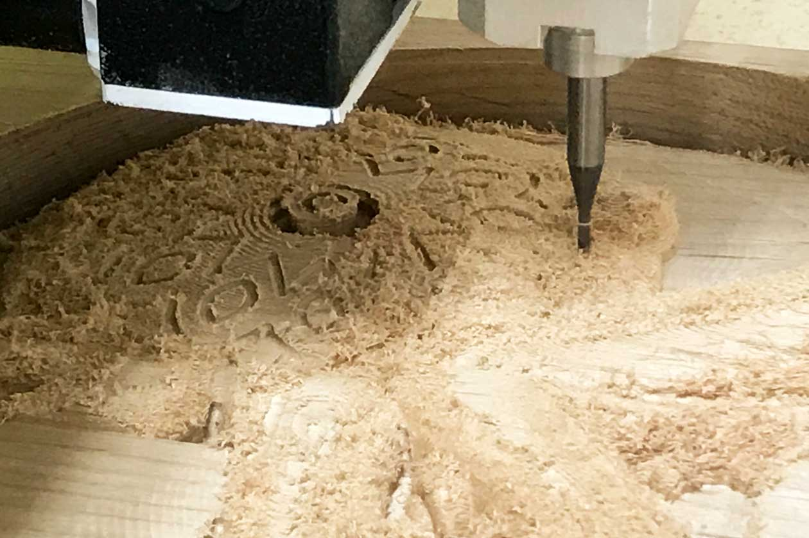
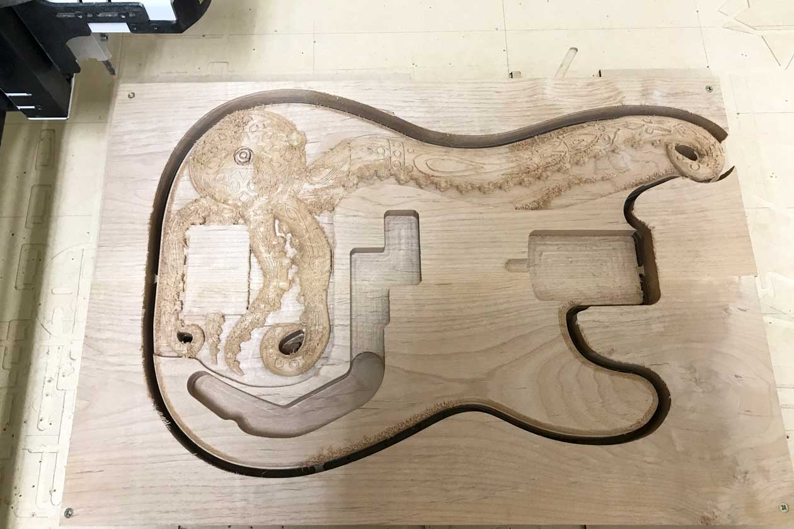
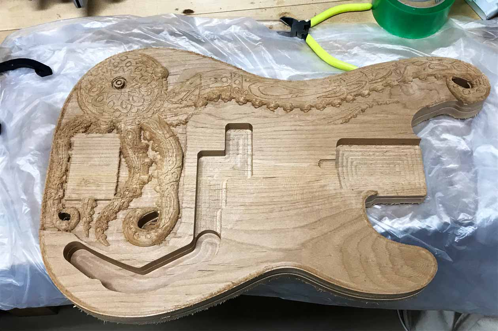

3.CNCでの切削
NCコードを生成したので、CNCルーターを使ってボディを加工していきます。これから長い長い戦いが始まります。
事前準備
まず前回の「Drive Bird」の経験を踏まえて、切削途中でエラーや物理的な問題が起きた時の復帰方法について調べておきます。こちらについてはまた別ページでまとめます。
ボディ用の木材も入手しておきました。今回も「Drive Bird」の時と同じく、アイチ木材加工株式会社さんから取り寄せました。木材はアルダーの2Aグレードです。アルダーはギターやベースにおいてはスタンダードで、バランスのいいサウンドの材です。また柔らかめの材ですが、適度な硬さもあり密度も均一のため彫刻をするには最適の材です。
こちらが用意した材です。2ピースですがいい材です。ステージにねじで木材を固定します。その後エンドミル、原点の調整をしセッティング完了です。

切削開始
いよいよ切削開始です。最初は裏面の輪郭を削っていきます。

裏面が終わるとこんな感じです。ここで一度日を改めます。

ザグリの切削
数日後。裏面が終わったので、裏返してステージに固定していきます。次は表面のザグリの切削です。慎重に進めていきます。

外周の切削
次は表面の外周です。ここも問題なく進んでいきます。

表面の切削
エンドミルを3mmに交換し表面の切削をしていきます。ここの工程が30時間くらいかかります・・・。この段階で時刻は深夜23時。今日は申請書を出して学校に泊まります。寝ずに見守り続けます・・・。
翌日さすがに眠かったので原田さんにお留守番を頼んでいったん家に帰ります。このとき事件が起こりました！！エンドミルが木に引っかかったらしく座標がずれてしまいました・・・！そこでいったん止めてもらって合流。そんなこともあろうかと事前に復帰方法を調べておいたので試してみます。ここで失敗したら今までの何十時間の切削が水の泡になるので、原田さんとびくびくしながら復帰方法を試してみると・・・成功！！！無事成功したので切削を続けていきます。よかったー！！！もう一晩学校で夜を明かすことになりますが・・・頑張っていきます。二日連続学校に泊まっているので、学校の警備員さんと仲良くなりました。

仕上げ加工
表面の切削が終わり、粗削り工程はすべて終わったので仕上げ加工に移ります。エンドミルを2mmボールエンドミルに交換し、仕上げ加工開始です。

タコへの彫刻
仕上げ加工まで終わったのでタコの表面の彫刻に移っていきます。エンドミルは引き続き2mm二枚刃ボールエンドミルです。ここでも事件が起こります！開始直後にガガガッ！と嫌な音が鳴ったため、急いで中止します。よく見てみるとエンドミルの固定が甘かったらしく、下にずれて深く削ってしまったようです。幸い少しだけで目立たなかったので難を逃れたのですが、本当に危なかったです。反省ですね。
結果綺麗に削れました。

切り離し
最後に6mmエンドミルに交換し外周の輪郭を切り離していきます。

その後ミニのこぎりでタブを切断して完了です。長い戦いが終わりました！

こちらは切削の動画です。
【ただいまコメントはご利用いただけません】
0 Comments